主讲：李瑀旸｜磐石·科学智能实训营
01 领域基座模型负责数据建模，AI Scientist 负责组织科研过程#
人工智能参与科学研究，可以从两个相互关联的问题入手：怎样从科学数据中学习可复用的特征，以及怎样组织工具和实验，使研究过程能够持续推进。
第一个问题指向领域基座模型。一个学科往往积累了大量观测或实验数据，但只有少部分数据经过专家标注。如何利用其余数据学习结构、关联和变化规律，再将所学表示用于分类、参数估计等具体任务，是构建领域基座模型的基本出发点。
第二个问题指向 AI Scientist 系统。科研过程包含文献调研、问题提出、实验设计、实验执行、结果分析与方案修正。模型可能完成其中一项预测，而科研系统还需要把这些环节组织起来，根据实验反馈决定下一步行动。
可以从光变曲线的小规模实验理解这两个问题：先建立分类模型，再引入预训练和微调，随后由智能体协助设计、运行和比较实验。通过这一过程，逐步理解数据表示、任务适配与实验迭代之间的联系。
02 人工智能正在从数据预测扩展到科研过程的组织#
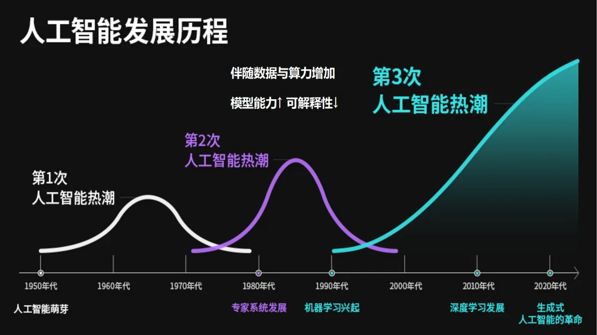
统计学习和深度学习为科学研究提供了一类数据驱动的方法：从已有样本中学习输入与输出之间的关系，用于识别、分类、回归或预测。例如，输入一段观测序列，输出天体的类别；输入分子的表示，预测某种性质。这类任务通常围绕一个明确的数据接口展开。
大语言模型与工具调用能力的发展，使人工智能可以进一步参与科研过程的组织。文献中的信息能够被用于提出候选假设，实验步骤能够被转化为工具调用，运行结果又能够成为下一轮分析和设计的依据。科学模型与科研智能体因此形成互补：前者处理专业数据，后者围绕研究目标协调信息、工具和行动。
科研应用同时关心任务表现与科学解释。准确率用于衡量预测表现；对物理机制的判断，需要结合模型依赖的特征、对照实验和领域知识。智能体生成的报告也需要逐项核对实验记录，使每个结论都有相应证据。
03 科学问题需要先明确输入、输出与评价标准，再进入建模#
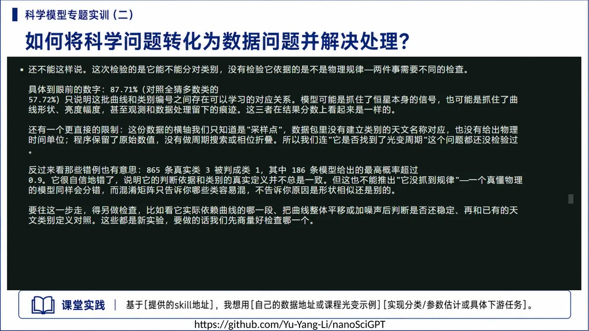
将人工智能用于一个具体学科，通常需要完成两步：先把科学问题转化为明确的数据任务，再选择方法解决这个任务。
“研究某类天体”仍然是一个宽泛的目标。要进入建模阶段，需要进一步说明：输入是图像、光谱还是光变曲线？输出是类别、某个物理参数，还是一段未来观测？现有样本有多少，标签来自哪里？结果需要达到什么精度，对可解释性有什么要求？这些信息决定了模型能够学习什么，也决定了应当怎样检验结果。
清晰的数据任务同时有利于三种思考：研究者自己明确问题边界，与其他学科的研究者交换方法，以及与人工智能工具协作。跨学科交流中，不同领域的术语可能形成障碍；当问题被表述为输入、输出、约束与评价标准时，双方更容易讨论可行的技术路径。
数据任务确定后，可以按数据探索、预处理、模型选择、训练和评价的顺序建立基线。探索性数据分析（Exploratory Data Analysis，EDA）用于了解样本分布、缺失值、异常值及不同变量之间的关系。预处理需要适应数据本身的结构，随后再选择具有相应建模能力的方法。
表格数据可以从树模型或 Boosting 方法开始；时间序列可以比较 LSTM、GRU 和 Transformer；图像任务可以选择卷积网络作为基线；包含节点、连接关系或几何结构的数据，则可以考虑图神经网络。这里的模型是候选起点，最终选择仍取决于任务、数据规模、物理约束与实际评价结果。
光变曲线描述天体亮度的变化，是时间序列建模的一个实例。StarLightCurves 数据集中的曲线按采样点排列，横轴记录采样点序号，数据材料未提供物理时间单位。光谱则按波长等变量描述信号。明确横轴及测量量的含义，有助于选择合适的表示和处理方法。[2]
基线构建 Skill 将数据检查、模型训练和评价步骤组织为编程智能体可以读取和执行的方法说明。[2] 研究者提供任务目标、数据位置和评价要求后，可以让智能体按这些步骤建立基线。若有解释性要求，还需要将其具体化，例如检查模型依赖曲线的哪些部分，以及对噪声或整体平移是否敏感。
在本次光变分类示例中，LSTM 的单次测试准确率为 87.71%。模型的判断依据可能包括曲线形状、亮度幅度或数据处理留下的特征。要进一步理解这些特征与天体物理机制的关系，可以检查模型关注的曲线片段，测试加入噪声或整体平移后的表现，再结合领域知识分析。
04 无标签数据可以用于预训练，有标签数据可以用于任务适配#
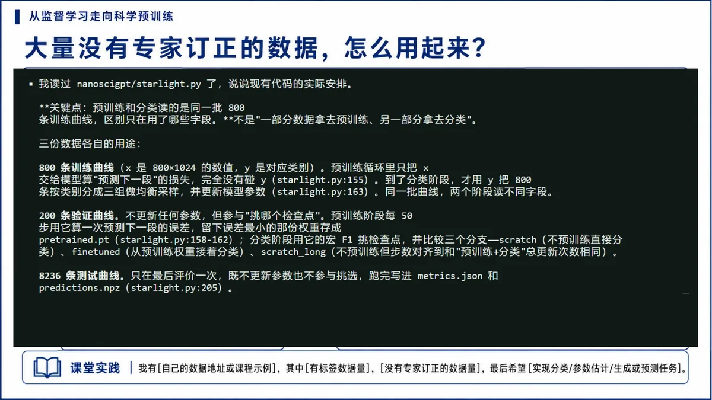
观测设备和测序技术可以持续积累曲线、图像和序列，而专家确认的类别或性质通常只覆盖其中一部分。监督学习依靠输入与任务标签之间的对应关系，因此还需要其他训练方式，才能利用大量未标注样本。
可以把学习过程分成两个阶段。第一阶段利用大量数据学习其内部的结构和关联，例如曲线的变化方式、序列中的上下文关系。第二阶段再利用少量有标签样本，把已有表示适配到目标任务。前者对应预训练，后者可以通过下游任务微调实现。
“无标签数据”指缺少目标任务标注的数据。自监督学习从数据本身构造训练目标，例如用序列的前一部分预测后一部分。实际的后续序列提供了训练信号，使模型能够学习序列内部的关系。
对于光变曲线，可以先学习序列的变化结构，再利用有类别标签的样本训练分类器。蛋白质、DNA、分子和时空场也可以采用类似的分阶段思路，但其数据表示和预训练任务需要分别设计。
05 预训练学习数据关系，微调使模型适应具体任务#
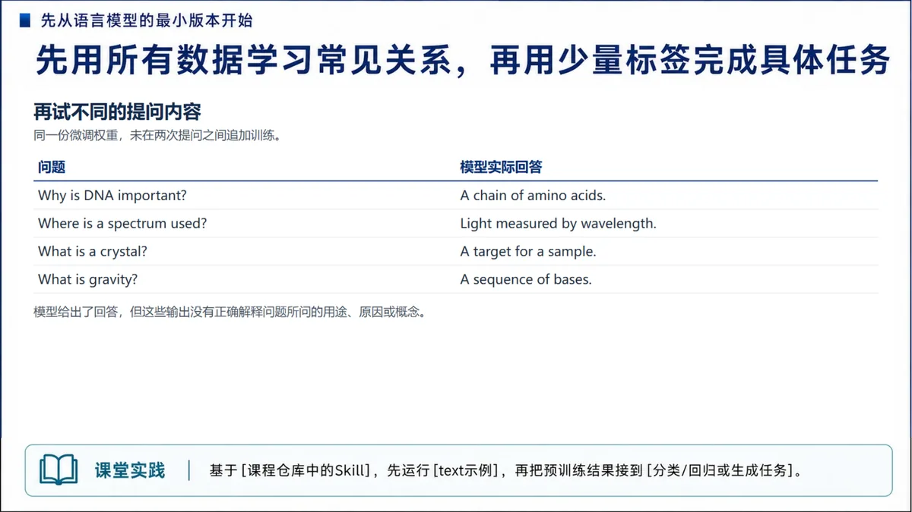
自回归语言模型提供了一个直观的预训练例子：给定已有文本，预测下一个 token。Token 是模型处理文本的基本单元，可以对应一个字、一个词或词的一部分。模型通过大量这样的预测任务学习上下文关系。
例如，给定“天气真不”，接续内容可能是“错”，具体取决于前文语境。训练时，模型输出候选 token 的概率分布，将其与数据中实际出现的 token 比较，计算损失，再根据梯度更新参数。
增加训练数据、模型容量和上下文范围，可以为学习更复杂的关联提供条件。研究者需要在目标任务上比较不同配置，检验这些关联是否带来了实际收益。
预训练完成后，模型首先获得的是延续输入序列的能力。如果直接给它一个问题，它可能继续生成与上下文相似的文字，却未必按“问题—答案”的形式作答。为了让这种能力适应问答，可以再用配对的问答数据进行监督微调，使模型学习目标任务所要求的输出形式。
预训练学习较广泛的数据关系，微调将这些表示用于特定任务。问答微调展示了这种适配过程；完整对话系统还可能包含其他训练与对齐环节。
基于 nanoGPT 的小模型练习，可以用较少资源观察训练损失和微调前后的输出变化。[2][4] 练习重点是跑通预训练与任务适配，检查模型如何改变输出，以及这些输出在具体问题上的正确程度。
问答微调后的模型仍可能混淆科学概念。在一组小模型测试中，面对“Why is DNA important?”，模型回答“A chain of amino acids”；面对“What is gravity?”，模型回答“A sequence of bases”。前一条用氨基酸链描述 DNA，后一条用碱基序列解释引力，两条回答都出现了概念混淆。评价问答模型时，需要同时检查回答形式、概念准确性及回答与问题的对应关系。[1]
练习时，应同时保留正确与错误输出，比较同一输入在微调前后的变化。损失下降说明模型对训练目标的拟合有所改善；能否推广到新问题，还需要独立样本和有针对性的评价。
06 光变序列的片段表示可以衔接自监督预训练与分类任务#
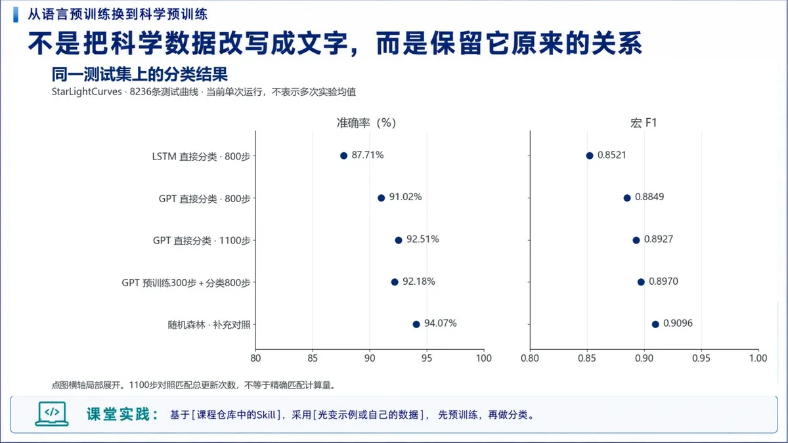
将语言模型的方法用于科学数据，首先需要解决表示问题。可以把科学数据组织成模型能够处理的序列，同时保留其中有意义的关系。
蛋白质可以用氨基酸序列表示，DNA 可以用碱基序列表示，符号之间的关系具有各自的生物学含义。气象数据包含时间与空间关系，晶体包含几何结构。将这些数据送入模型时，需要在编码中保留相应的顺序、邻接或空间信息。
对于连续时间序列，可以将输入划分为若干片段，将每个片段编码为一个表示单元。这个单元在模型中的作用类似于语言模型的 token：片段构成局部单位，整段曲线构成有顺序的上下文。数值片段经过编码后，便可以进入序列模型学习。
在光变实例中，先使用序列预测任务进行预训练。模型看到曲线的一部分，并尝试预测后续变化。训练前的预测可能接近随机波动；经过训练后，预测与输入序列的变化结构更加一致。随后，保留已经学习到的表示，将输出任务改为分类，并使用有类别标签的样本进行微调。
这样就把一个连续序列的自监督学习过程，与研究者真正关注的分类任务连接起来。实际评价时，还需要比较直接分类与先预训练再分类的结果，检查额外的预训练是否带来了收益。
在 StarLightCurves 光变分类实验中，五种训练设置在同一组 8,236 条测试曲线上得到以下单次运行结果：[1]
| 训练设置 | 准确率 | 宏 F1 |
|---|---|---|
| LSTM 直接分类，800 步 | 87.71% | 0.8521 |
| GPT 直接分类，800 步 | 91.02% | 0.8849 |
| GPT 直接分类，1,100 步 | 92.51% | 0.8927 |
| GPT 预训练 300 步，再分类训练 800 步 | 92.18% | 0.8970 |
| 随机森林，补充对照 | 94.07% | 0.9096 |
在这次单次运行中，随机森林的准确率和宏 F1 最高。预训练方案的准确率高于 800 步直接分类、低于 1,100 步直接分类，宏 F1 则高于这两组直接分类结果。两个指标给出了不同的比较顺序，选择训练方案时需要结合任务关注的评价目标。1,100 步对照匹配了总更新次数，各方案的实际计算量仍可能不同。[1]
若进一步研究预训练的价值，可以在一致的数据划分下增加无标签样本、改变模型规模，并重复实验。比较不同条件下的结果及其波动，才能判断预训练在什么条件下有帮助。
07 基座模型通过预训练形成可复用的表示，再适配下游任务#
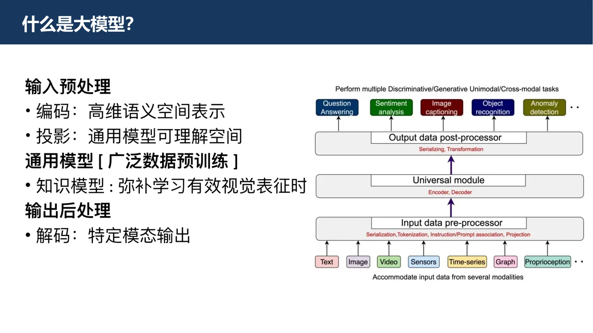
领域基座模型通常包含输入表示、共享模型和面向任务的输出部分。输入可以是语言、图像、科学序列或其他结构化数据，经过编码后进入模型的表示空间。模型通过预训练学习可复用的特征，再通过任务适配输出类别、数值、结构或生成结果。
基座模型在较广泛的数据上预训练，形成能够适配多种下游任务的表示。[3] 其基础作用体现在表示复用和任务适配，模型规模则描述参数量等资源特征。评价一个领域模型时，需要分别考察它的规模、预训练数据范围以及在不同任务上的适配表现。
在具体科学领域开展探索，可以先从较小规模入手，验证数据表示、预训练目标和下游适配是否合理，再决定是否扩大训练。模型的规模应与数据、目标任务和资源条件相匹配。
08 预训练表示的迁移效果取决于数据与目标任务的关联#
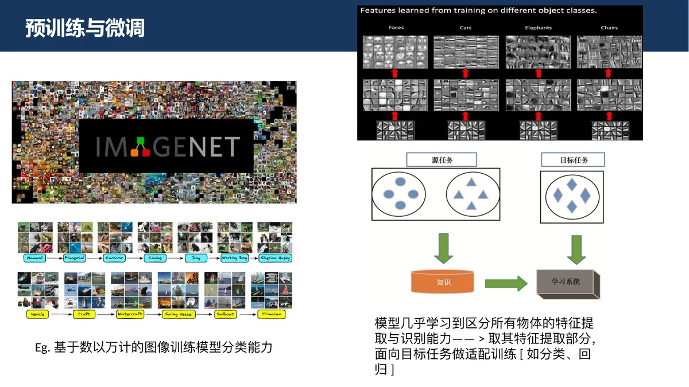
预训练与下游任务之间，通过模型内部的表示建立联系。例如，一个图像模型在较广泛的图像数据上训练后，其特征提取部分可以作为新任务的起点。研究者可以在此基础上增加或调整输出部分，再利用目标领域的数据进行适配。
表示的复用程度取决于预训练数据与目标任务之间的关联。两者差异较大时，需要检查哪些特征仍然适用、哪些部分需要进一步训练。目标数据上的评价结果，可以帮助确定适配范围。
09 序列中的前后关系可以构成自监督训练的学习目标#
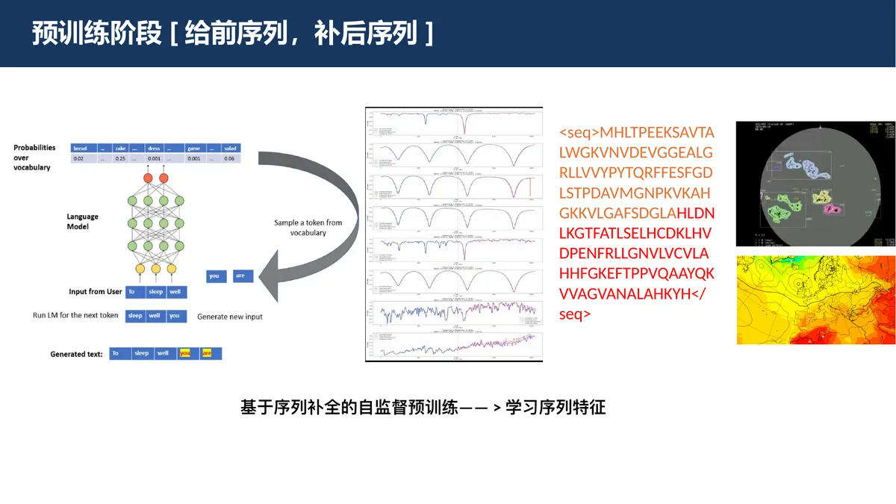
序列补全可以从数据本身构造监督信号。给定前面的一段序列，模型预测后续内容，实际后续序列就是训练目标。通过重复这一过程，模型学习输入中的统计关系及上下文结构。
这种思路可以用于文本，也可以用于适当表示后的科学序列。氨基酸序列、光变曲线及某些时空数据，都可以根据数据特点设计预测任务。表示方法需要保留序列顺序、局部邻接和物理含义，使训练目标与科学对象的结构相适应。
预训练得到的表示为后续预测提供基础。进入任务适配阶段后，需要明确输出对象，并选择相应的标签与评价标准。
10 任务标签将预训练表示与具体科学量的预测联系起来#
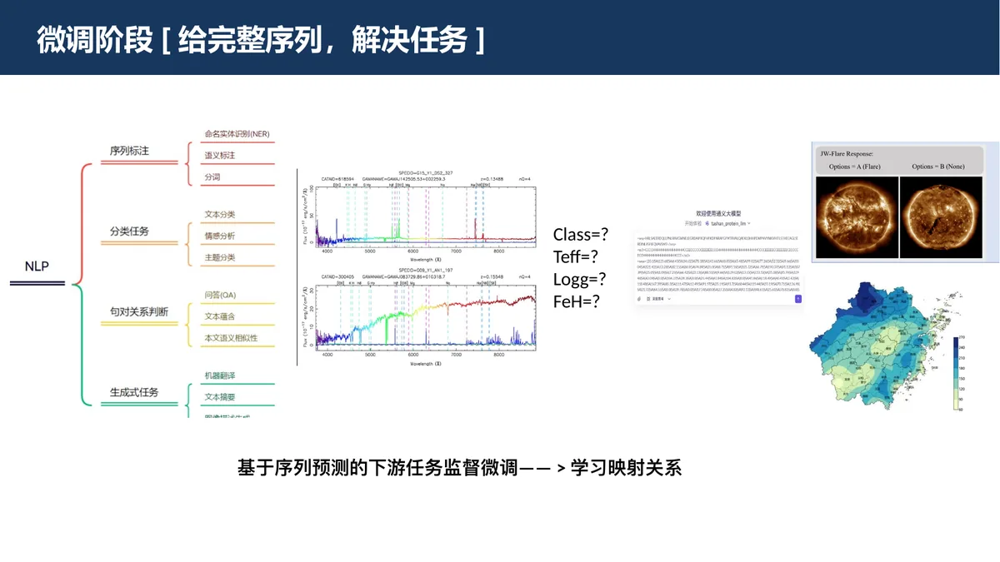
微调将预训练得到的表示与任务标签联系起来。对于分类，输出是类别；对于回归，输出是研究者关心的连续量。天文任务中，可以考虑天体类别，或在具有相应数据与标签的条件下估计有效温度、表面重力和金属丰度等参数。
同一类输入可以服务于不同任务，每个任务都需要明确标签的定义、单位和评价标准。标签决定输出量的含义，独立评价检验预测的准确程度，二者共同支撑对结果的解释。
其他领域也有相同结构：从蛋白质表示预测性质，从太阳观测数据判断活动状态，或者从时空数据预测气象变量。方法之间的共同点在于复用表示，而具体的输入、输出和科学约束仍属于各自领域。
11 专用任务中学到的表示为跨任务复用提供了研究起点#
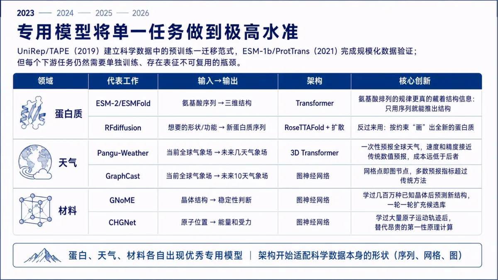
专用科学模型通常围绕一个明确任务设计，将数据结构、领域知识和评价目标结合起来。模型的输入、网络结构和输出形式，都可以针对这一任务进行优化。
当某一任务取得较好表现后，一个自然的问题是：相同数据中学到的表示，能否支持其他任务？如果每个任务都从头整理数据、训练网络，就难以共享已经积累的经验。由此产生了从专用任务走向可复用表示的研究思路。
各领域的数据条件和研究目标不同，从专用任务走向表示复用的进度与技术路径也有所差异。
12 同一套预训练表示可以通过任务适配服务多个科学任务#
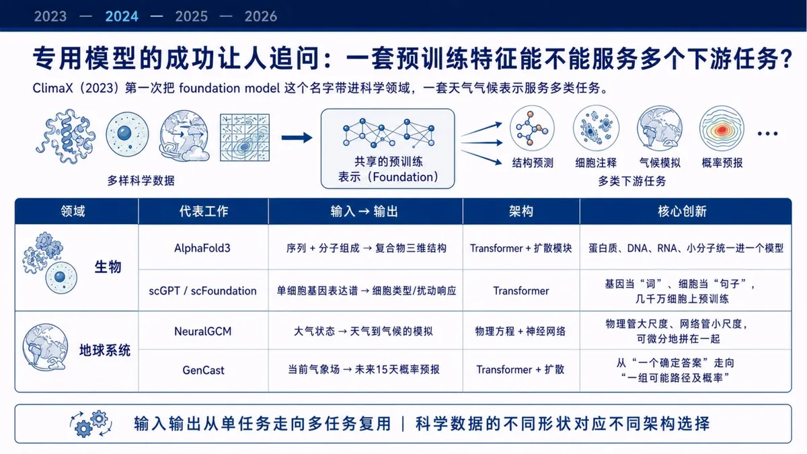
一个预训练模型可以在不同任务中复用相同的基础表示，再通过任务头或微调处理各自的输出要求。例如，同一类分子或生物序列中可能包含多个性质相关的信息，预训练得到的表示可以分别用于分类、性质预测或其他任务。
复用表示可以让不同任务共享已有训练成果。通过多个下游任务的评价，研究者能够检查哪些信息具有迁移价值，以及哪些任务仍需要专门的表示或训练。
Transformer 是其中常见的模型结构，具体架构可以根据数据结构和任务要求选择。
13 生成模型提出的科学候选需要通过计算或实验验证#
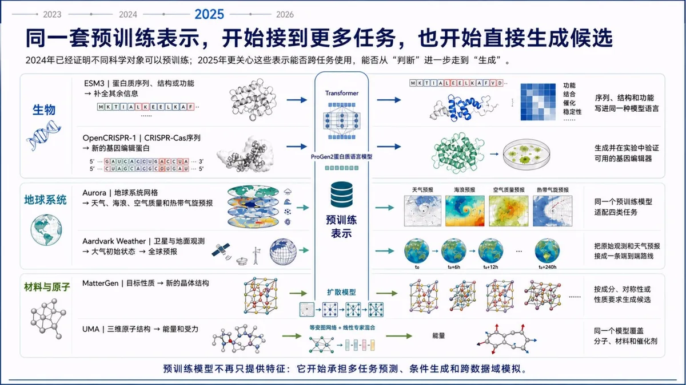
科学模型的输出可以从类别和数值，扩展为结构、序列或候选对象。在已有数据与约束下生成候选，使模型能够参与研究方案的探索。
生成候选之后，需要通过计算或实验检查其科学约束和目标性质。生成与验证共同构成候选筛选过程：模型提供探索方向，验证结果决定哪些候选值得继续研究。
根据任务需要，研究者可以组合不同结构，例如在部分生成或时空建模场景中结合 Transformer 与扩散方法。结构选择应服务于要表达的数据关系和输出目标。
14 跨模态、跨分布与跨对象建模需要明确数据之间的对齐关系#
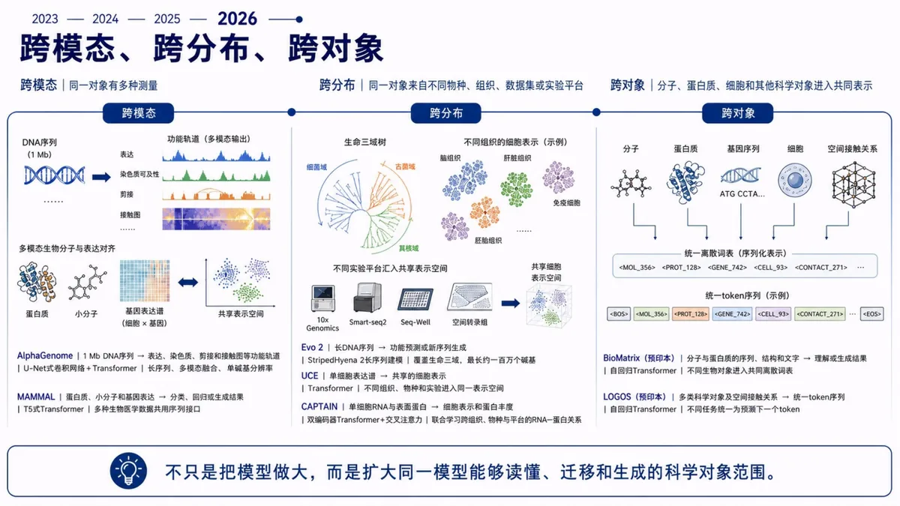
当模型开始处理更多来源的数据，需要进一步区分三类问题。
跨模态关注同一研究对象的不同测量形式。例如，一个对象可能同时具有序列、结构和表达信息；模型需要理解这些信息之间的联系。
跨分布关注数据来源或条件的变化。同类对象可能来自不同物种、组织、实验平台或数据集，数值分布和采集条件并不完全一致。共享表示需要面对这些差异。
跨对象关注不同科学对象之间的共同描述，例如在同一框架中表示分子、蛋白质、细胞及其关系。一种探索方式是将多类科学对象组织为统一 token 序列。这类方法希望让模型在共同表示中学习关联，其效果仍需在相应任务上检验。
扩大模型可处理的数据范围，需要先明确哪些信息需要对齐、对齐关系有什么科学依据，以及共同表示能够支持哪些任务，再确定相应的架构和训练规模。
15 公开报告整合形成信息时间序列，硬件协同决定实际观测节奏#
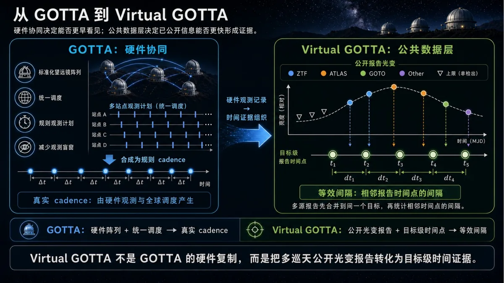
Virtual GOTTA 与 SN Clock 的设计示例，将公开观测报告的组织、序列表示学习和爆发年龄估计联系起来。[1]
硬件协同观测与公开数据整合，是两种不同的组织方式。前者通过望远镜阵列和统一调度安排实际观测，后者把不同巡天发布的测光报告汇集到同一目标下，形成按时间组织的信息。
Virtual GOTTA 采用公开数据整合方式：整合公开光变报告，统计目标级报告时间点及其间隔。这种报告间隔反映公开信息的到达情况，应与望远镜真实观测的采样节奏区分。
16 观测事件序列需要保留时间、波段、来源与探测状态#
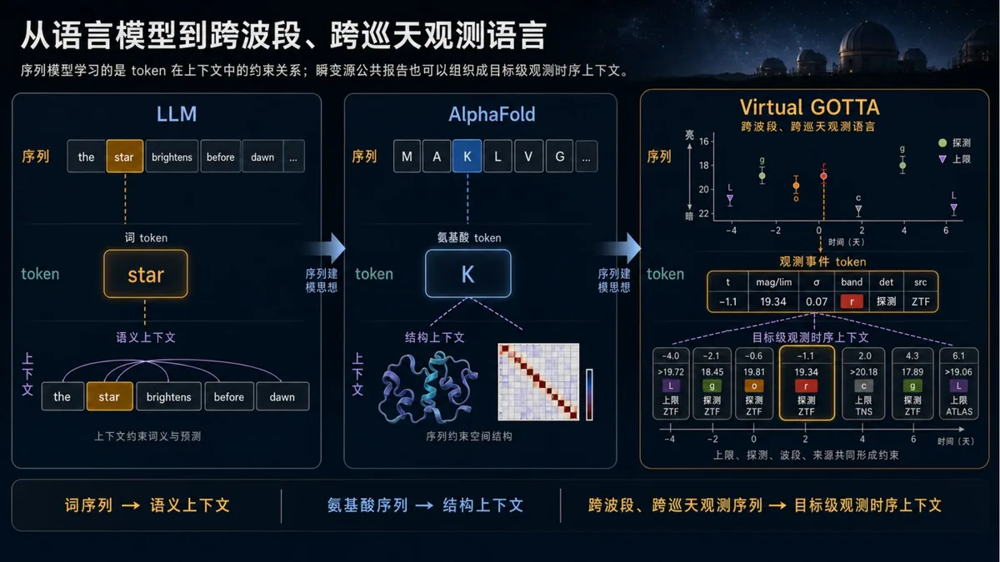
一条观测记录可以同时包含时间、亮度或上限、测量误差、波段、探测状态和来源。将这些字段组织为观测事件 token，再按目标构成时序上下文，可以保留不同记录之间的关联。
波段、探测状态和来源共同决定一条记录的观测含义。亮度测量与未检出时给出的上限，应分别记录其状态；不同波段的数据也需要保留对应标识。这样，模型可以结合测量条件理解数值之间的关系。
17 历史观测报告可以用于学习服务下游任务的证据表示#
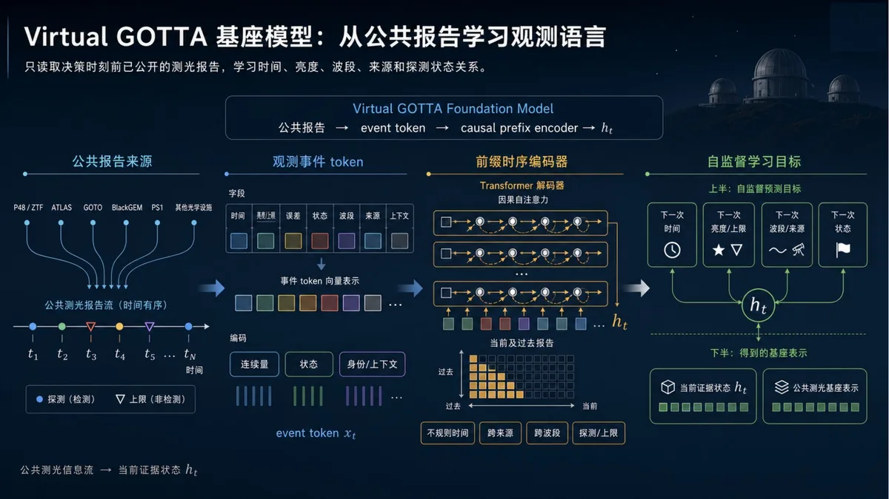
Virtual GOTTA 的模型方案将公开报告转为事件序列，通过前缀时序编码器得到当前证据状态。自监督目标包括后续报告的时间、亮度或上限、波段或来源以及探测状态等。
这一设计有明确的时间边界：在某个决策时刻，只使用此前已经公开的信息。若训练或评价混入未来报告，模型就可能利用实际决策时尚不可获得的信息，造成对应用能力的高估。
所得表示概括了当前可用的公开测光信息，可以作为下游分类或参数估计的输入。
18 SN Clock 方案通过观测表示估计爆发年龄的分位数#
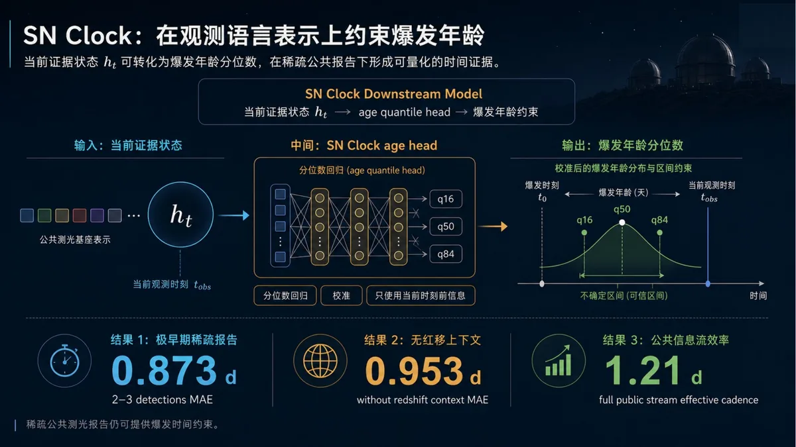
SN Clock 的下游模型方案使用当前证据状态估计爆发年龄。输出采用分位数形式，包括第 16、第 50 和第 84 百分位，用于描述估计值及其不确定性范围。
这一方案先学习观测信息的表示，再将表示用于爆发年龄估计。分位数给出估计分布中的不同位置，区间的实际覆盖情况需要通过校准与独立样本检验。
示例指标的适用样本与完整评价条件尚未提供。
19 智能体可以把模型改进组织成提出方案、运行实验和比较结果的循环#
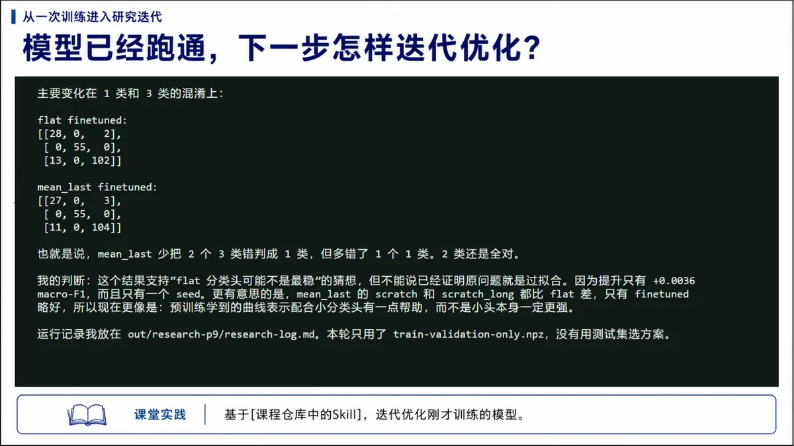
模型能够运行之后，研究往往进入反复改进阶段。可调整的内容大体包括数据、模型结构和训练设置。研究者提出一个改动，修改程序，运行实验，再比较结果；如果每一步都需要手工衔接，这个过程会消耗大量时间。
autoresearch 提供了一种将程序修改与实验反馈连接起来的实践形式。[5] 在明确的运行环境和评价目标下，智能体可以提出改动、编辑代码、运行实验、检查结果，并据此决定下一步。这使计算环境成为一个可以持续交互的实验环境。
在光变分类任务中，可以先让智能体根据基线结果提出候选方向，再要求它解释这些方向的依据。模型为何要改变序列表示，为什么调整训练设置，预期影响哪个指标，都应当说清楚。随后再决定实际执行哪些实验。
迭代需要有明确的比较基础。若每一轮同时改变数据划分、模型结构和评价指标，即使分数提高，也难以判断改善来自哪里。保存实验设置、运行日志与结果，是理解改动效果的前提。
nanoSciGPT 提供了基线训练、预训练与微调的运行记录，完整自动研究流程仍处于试验阶段。实践时可以先完成基线训练与实验方案讨论，再逐步检查自动执行的各个环节。[2]
20 AI Scientist 将计算实验与假设生成、结果分析和写作连接起来#
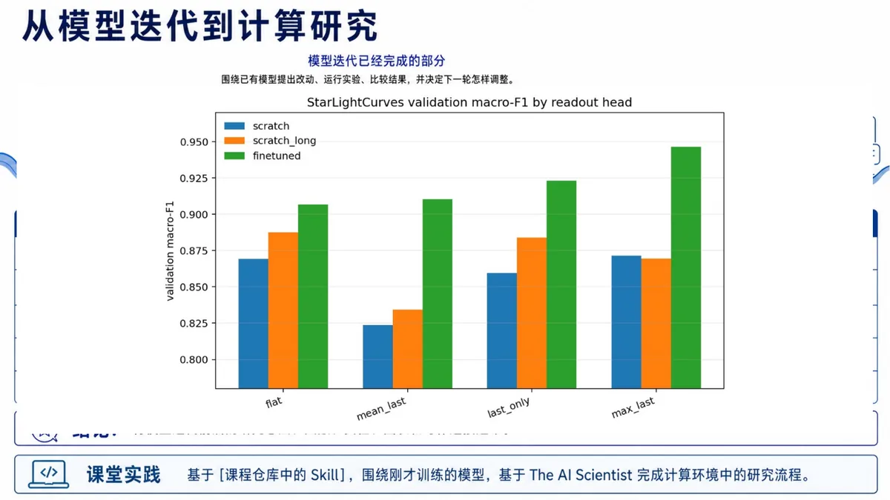
计算实验只是科研流程的一部分。实验之前，需要提出问题、形成假设并设计方案；实验之后，需要处理结果、解释差异、整理报告，再由这些结果产生新的问题。
The AI Scientist 的研究框架将想法生成、实验执行、结果整理和论文写作等环节连接起来。[6] 模型训练由此成为研究方案的一次检验，其配置、运行过程与结果都需要记录，供后续分析和方案修正使用。
以光变任务为例，可以从“哪种序列表示更适合当前分类任务”出发，设计若干可比较的实验。结果分析需要说明各项证据支持什么判断、还存在哪些替代解释，以及下一轮实验如何区分这些解释。研究报告据此组织论点、实验记录和结论。
机器学习与计算实验适合作为自动研究流程的实践起点，相应工具可以直接在代码环境中运行。将这种框架迁移到其他学科，还需要重新定义假设空间、实验工具和结果判据。
21 树搜索让科研系统能够比较并选择多条实验路线#
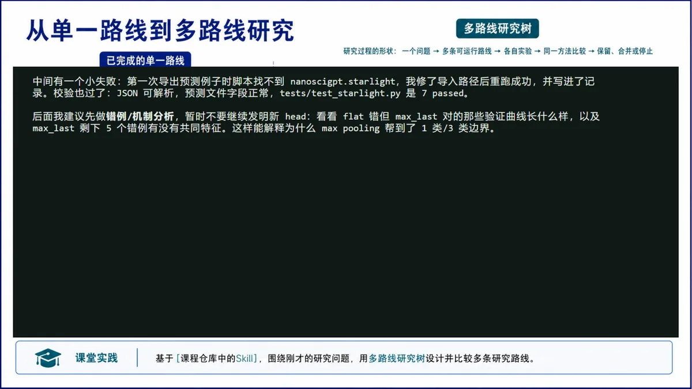
面对一个研究问题，可能同时存在多个值得检验的想法。一条固定流程能够依次执行任务，却未必适合在不同研究路线之间反复比较和选择。
The AI Scientist-v2 采用由实验管理智能体协调的渐进式树搜索，扩展并比较实验分支，同时减少对人工编写代码模板的依赖。[7] 与只沿一条路线继续修改相比，这种组织方式允许系统保留多个候选方向，再依据结果决定继续探索哪一个分支。
多路径探索需要比单次运行更清晰的记录。每个分支改变了什么，使用哪些数据，结果与哪个基线比较，失败是否来自方法本身还是执行错误，都需要保留。否则，分支数量增加只会带来更多难以解释的运行结果。
在研究实践中，可以让智能体提出多个假设，与研究者确认优先级，再选择有限的实验开展比较。分支的选择依据应包括科学目标、已有证据和实验成本，使探索集中在值得检验的问题上。
22 实验反馈需要参与下一轮决策，才能形成持续迭代的研究流程#
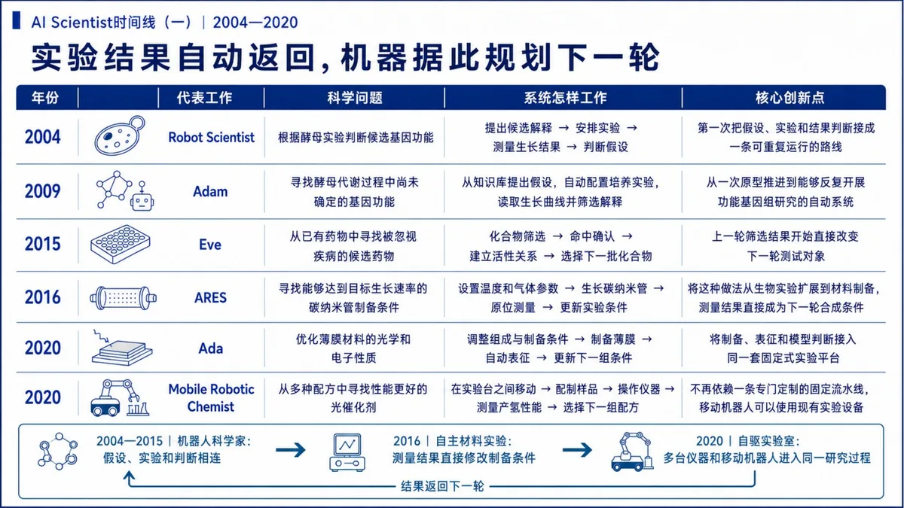
自然科学中的自动实验设备，为研究流程自动化提供了物理基础。实验装置可以执行预定操作，采集数据，并将结果返回计算系统。关键在于，返回的数据是否能够参与下一次实验的选择。
一个反馈驱动的过程包括：提出待验证的问题，选择实验条件，执行实验，分析结果，再修改下一轮方案。各环节需要共享足够的信息，使新的决策建立在前一轮的证据上。
物理实验受到设备能力、操作安全、样本条件和实验成本约束。将计算研究框架用于实验室时，需要在工具接口和执行规则中明确可执行的操作、必要的检查及异常处理方式。
23 语言模型接入实验工具时，需要同时定义科学目标与验证标准#
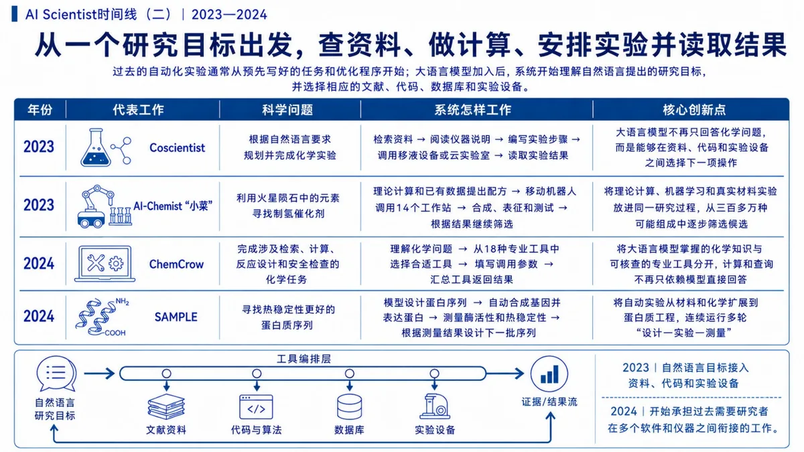
当语言模型能够读取文献、理解实验要求并调用外部工具时，就有可能把研究目标转化为计算或实验操作。Coscientist 是这一方向的案例之一：研究将大语言模型与搜索、代码执行和实验自动化能力结合起来，用于化学研究任务。[8]
进入具体学科后，问题提出、实验执行和评价标准都需要适应研究对象。材料或生物医药任务需要围绕相应性质和实验终点设计验证，并选择适合的仿真程序、分析仪器或自动化实验平台。
迁移 AI Scientist 框架时，需要逐一明确系统处理的问题类型、可执行的操作、反馈的获取方式和结果的判断责任。通用流程与学科特定的科学对象、工具和证据标准结合后，才能形成可实施的研究方案。
24 固定工作流与动态规划应依据稳定性和探索需求配合使用#
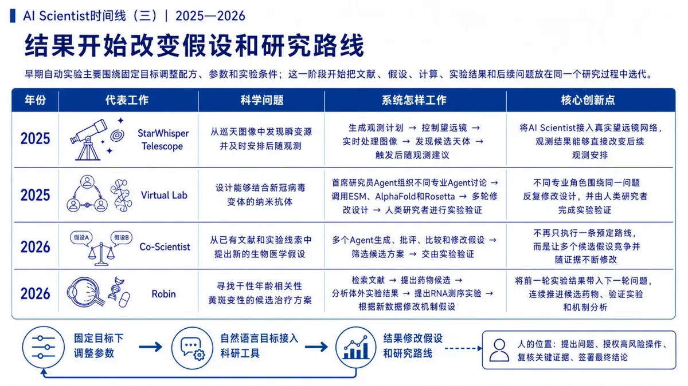
科研系统可以采用相对固定的智能体工作流，也可以让具有较强工具使用能力的编程智能体承担更多动态规划。固定工作流便于明确步骤、控制接口和检查执行状态；动态组织则允许系统根据中间结果调整路线。
Skill 可以承载可读取的任务说明、方法步骤和经验，供编程智能体在执行任务时参考。实验结束后，研究者可以依据结果和人工反馈检查这些说明，保留有效步骤并修正不适用的做法。持续的记录、检查和更新，使经验能够逐步积累。
天文观测提供了一个学科实例。科研系统需要处理观测计划、望远镜指向、多个设备或传感器的协调，以及观测后的数据分析。结果可以反过来指导下一轮目标选择，从而把执行环节与研究决策连接起来。
选择何种组织方式，应考虑场景对稳定性、探索空间和人工审核的要求。对于必须严格遵循的步骤，可以保留固定流程；对于需要比较多个研究方向的部分，可以允许更灵活的规划。二者可以在同一系统中配合。
25 望远镜通过指向、观测和状态调整执行科研系统的行动#
具身科研系统通过仪器与外部环境发生联系。望远镜执行的行动包括改变指向、开展观测和调整设备状态。设备返回的状态与观测结果用于确认执行情况，并为下一步行动提供依据。
望远镜观测演示的视频截帧。
26 观测任务中的具体瓶颈决定应改进模型还是科研流程#
天文观测中的任务来自具体需求：在变化的观测条件下选择目标，协调观测资源，并及时处理返回的数据。构建系统之前，需要先说明哪一个环节形成了瓶颈，以及自动化能够解决其中哪一部分。
技术选择应从这些需求出发。数据处理困难可能需要改进科学模型，设备与流程衔接困难可能需要智能体协调。两类问题可以同时存在，但应分别定义和检验。
27 StarWhisper Telescope 将观测计划、设备状态与结果分析连接起来#
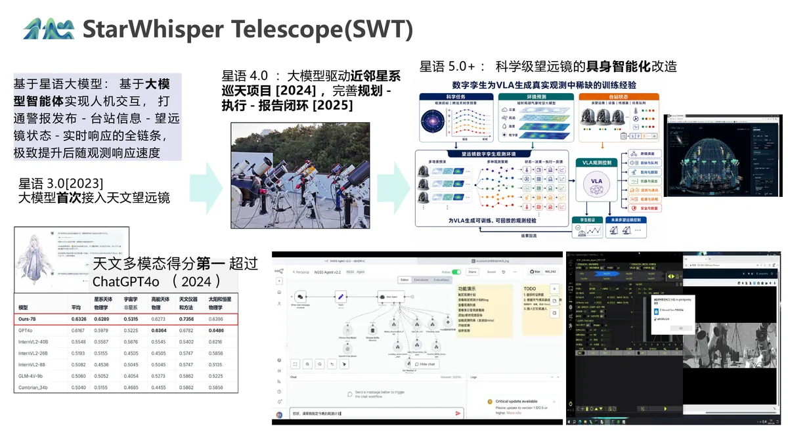
StarWhisper Telescope 案例将语言模型与天文观测环节联系起来，涉及警报信息、台站情况、望远镜状态、观测计划及结果报告。把这些信息接入系统后，研究目标才能转化为具体的观测安排。
进一步的探索包括为观测环境建立模型，并在数字孪生或仿真环境中研究行动策略。系统根据环境与设备状态选择动作，再检查动作造成的变化。策略在仿真中测试后，还需要通过真实设备验证，检查环境差异对观测表现的影响。
天文观测需求决定了系统需要连接哪些信息和工具：观测条件影响目标选择，测量信息支持结果分析，设备接口负责落实行动。
28 科学问题的解决常常需要数据模型与科研流程共同改进#
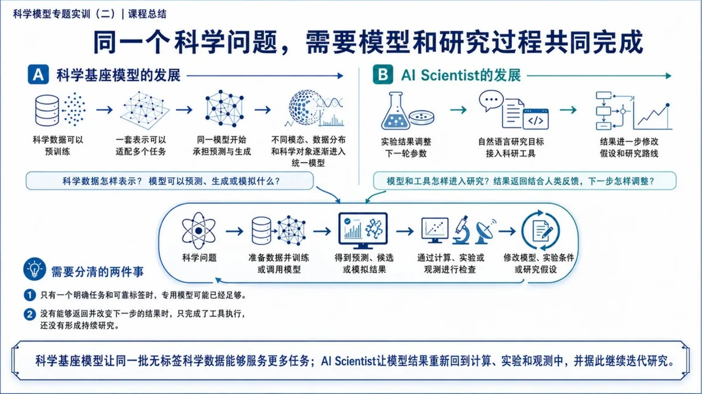
开始一个 AI4S 项目时，可以先判断困难主要位于哪里。
如果已有大量科学数据，但难以从中得到准确的类别、参数或预测，问题主要涉及数据表示与建模。当大量样本缺少任务标签、少量样本具有可靠标签时，可以研究预训练与下游适配是否能够充分利用现有数据。
如果单项工具已经可用，困难在于调研、设计、执行与分析之间缺少衔接，则需要考虑科研流程的组织。智能体可以承担一部分信息处理与工具协调，科学模型则作为其中处理专业数据的组件。
实际项目常常同时包含两者。模型得到预测，智能体据此提出下一步操作，实验产生新数据，再回到分析与建模。整个过程的有效性，需要由具体科学任务的结果来判断。
AI for Science 的方法选择应围绕研究问题展开。先明确数据和流程中的困难，再比较可用方法，依据实验结果决定下一步投入。
29 跨学科实践需要围绕清晰的问题组织领域、方法与工程能力#
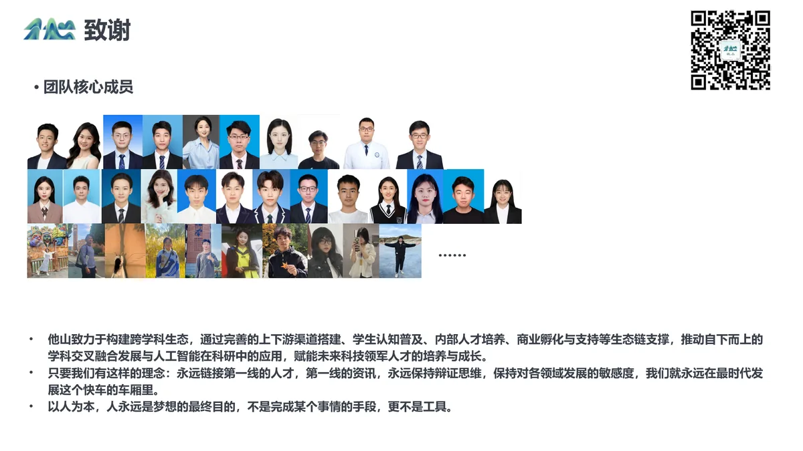
科学问题往往需要领域知识、数据方法和工程能力共同参与。领域研究者解释研究对象和证据标准，方法研究者提供建模与评价思路，工具和平台帮助团队实施与复现。这些能力之间的交流，需要建立在清晰的问题描述上。
理解基本方法后，可以围绕自己的数据与课题开展实践。在小规模任务中检验方法，记录失败和未解决的问题，再决定如何扩展，是连接学习与研究的一条具体路径。
数据条件、任务目标和资源约束共同决定方法选择#
将这些方法用于具体课题时，需要结合数据形式、目标任务、实验环境和可用资源选择实施路径。
一 输入数据与目标任务决定应使用语言模型还是领域基座模型#
选择方法，首先要区分输入是什么、需要完成什么操作。文献调研、实验方案整理和报告写作等任务，主要涉及语言及工具使用，可以先研究现有语言模型与工具组合是否满足要求。对光变曲线、分子结构等科学数据开展预测，则需要适合该数据形式的模型。
领域基座模型的探索条件之一，是拥有较丰富的数据，以及能够用于下游适配与评价的任务。大量无标签数据与少量可靠任务标签，是适合探索这一方法的典型数据条件。是否值得从头预训练，还应与复用现有模型或直接建立任务基线进行比较。
对于设备接口或仿真调用，可以先检查现有语言模型与工具组合的表现。如果调用准确性或执行稳定性不足，再定位失败环节，判断是否需要任务适配或进一步训练。
二 天文观测世界模型通过环境与目标信息支持望远镜行动学习#
天文观测世界模型可以围绕望远镜行动模型的训练需求构建。VLA 即视觉—语言—行动（Vision–Language–Action），关注系统如何根据观测信息和任务要求选择动作。
环境信息可以分为两部分。一部分描述观测条件，例如局部短时天气、全天相机看到的云层及其变化。另一部分描述科学目标在不同波段、不同望远镜条件下可能呈现的观测信息。二者共同影响“继续观测、切换目标还是暂停”的选择。
多望远镜数据之间还需要处理对齐问题。不同仪器、不同波段测到的结果不宜直接视为同一种数值，应依据观测条件和物理含义建立联系。环境模型与设备仿真共同提供状态与反馈，使行动模型可以研究不同策略的后果。
这一世界模型围绕具体观测任务定义，提供行动学习所需的环境信息与反馈。使用时需要检验仿真数据的适用范围，以及模拟环境与真实设备之间的差异。
三 编程智能体的运行机制需要兼顾探索能力与执行稳定性#
模型与工具的连接方式，影响智能体能完成哪些任务。Agent Harness 可以理解为支持智能体运行和协调工具的组织机制，其中涉及任务状态、上下文、工具调用和执行反馈等内容。
具有较完整运行机制的编程智能体，可以承担代码修改、实验运行和结果读取，减少研究者手工连接工具的负担。若将方法经验整理为可读取和更新的 Skill，还可以在不同任务中复用部分研究步骤。
长程任务中的运行机制需要跟踪目标、检查工具返回结果，并判断已有经验是否适用于当前任务。固定工作流便于控制步骤，动态规划便于探索不同路线；可以根据实验风险、可检查性和探索需求安排二者的分工。
四 二维到三维重建需要先定义输出表示并检查监督信息#
“把二维图像变成三维结构”需要先被定义成一个具体的数据任务。输入是一张扫描图像、多视角图像还是一组切片？输出是体素、表面、几何参数，还是其他结构表示？这些问题会直接改变模型设计。
如果能够通过已有方法获得一部分对应的三维结果，就可以构建二维输入与三维目标之间的配对数据。在具备适当数据和约束的条件下，可以考虑使用 EfficientNet 等图像编码器提取二维特征，再连接生成目标三维表示的模型。具体的输出模型和训练方式，需要根据数据条件选择。
实施前需要确定输出的三维表示、可获得的配对样本和相关物理约束，再据此比较模型方案。对于尚未明确这些条件的课题，下一步工作应集中在任务定义和数据准备。
五 多层次生物数据整合需要明确对象关系与可检验的建模目标#
DNA、RNA、蛋白质与细胞状态之间存在复杂关系。将它们放进同一个模型，需要说明哪些对象或测量彼此对应，哪些关系可以作为训练信号，以及模型应当输出什么。
可以分别考虑数据表示与环境建模。数据表示研究不同对象、模态和条件下的信息如何对齐；环境建模研究行动如何改变系统状态，以及这些变化如何被观察和评价。构建虚拟细胞时，需要结合具体研究目标，检验这两部分能够描述哪些关系和过程。
生物学先验可以体现为对象关系、已知约束或实验设计。具体如何编码，需要领域研究者与方法研究者共同分析，并通过任务验证逐步确定。这一方向仍需围绕具体数据和课题开展方法探索。
六 资源有限时，应先用小规模实验检验方法，再扩大训练#
可以从较小的数据子集、较短的输入序列和较小的模型开始，先检查输入表示、训练目标和下游评价是否可行。记录各项设置及其结果，找到值得继续研究的方向后，再逐步扩大训练。
资源需求由模型参数量、输入长度、分辨率、批量大小、训练步数和数据读写共同决定。大规模时空数据可能同时需要较多计算与存储资源，应当预先估算；较轻量的序列实验则可以用小配置验证基本流程。
随着任务逐步清晰，可以再考虑扩充数据、增加模型容量或申请更多计算资源。先证明某种方法在当前问题上具有研究价值，再扩大实验，是资源有限时较稳妥的推进方式。
参考资料#
- 李瑀旸：《如何构建领域基座模型与 AI Scientist 系统》，磐石·科学智能实训营课件及完整课程转写。课件 PDF。图像、案例数据及部分方法讨论的来源。
- 李瑀旸：nanoSciGPT 配套教学仓库。提供示例代码、数据说明、研究方法 Skill 与运行记录。
- Bommasani, R., et al. On the Opportunities and Risks of Foundation Models. 2021.
- Karpathy, A. nanoGPT.
- Karpathy, A. autoresearch.
- Lu, C., et al. The AI Scientist: Towards Fully Automated Open-Ended Scientific Discovery. 2024.
- Yamada, Y., et al. The AI Scientist-v2: Workshop-Level Automated Scientific Discovery via Agentic Tree Search. 2025.
- Boiko, D. A., MacKnight, R., Kline, B., & Gomes, G. Autonomous chemical research with large language models. Nature, 624, 570–578, 2023.